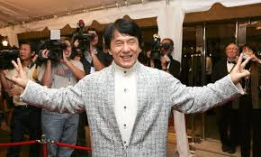

„შიმშილის თამაშები“ (ინგლ. The Hunger Games) — ამერიკელ მწერალ სიუზენ კოლინზის რომანი. იგი არის „შიმშილის თამაშების ტრილოგიის“ პირველი წიგნი. პირველად 2008 წლის 14 სექტემბერს გამოიცა. „შიმშილის თამაშები“ 27 ენაზე ითარგმნა, გამოცემის უფლებები 39-მა ქვეყანამ შეიძინა.
მთხრობელი 16 წლის გოგონა ქეთნის ევერდინია, რომელიც პოსტ-აპოკალიპტურ მსოფლიოში ცხოვრობს, რომელსაც მეტროპოლისი კაპიტოლიუმი მართავს.
შიმშილის თამაშები ყოველწლიური სატელევიზიო ღონისძიებაა, რომელშიც 12-დან 18 წლამდე ერთი ბიჭი და ერთი გოგონა მონაწილეობს.
მათ 12 რაიონიდან ლატარიით ირჩევენ. მხოლოდ ერთი მათგანი გადარჩება.
ბრიუს ლი (ინგლ. Bruce Lee; ნამდვილი სახელი — ლი ჯუნ ფენი, ჩინ.: 李振藩; დ. 27 ნოემბერი, 1940, სან-ფრანცისკო — გ. 20 ივლისი, 1973, ჰონგ-კონგი) — ჩინელი კუნგ ფუს ოსტატი, ფილოსოფოსი, მსახიობი, რეჟისორი, პროდიუსერი, სცენარისტი, საბრძოლო ხელოვნების ერთ-ერთი მიმდინარეობის ჯიტ კუნ დოს დამაარსებელი. XX საუკუნის ყველაზე გავლენიანი და სახელოვანი საბრძოლო ხელოვნების ოსტატი. გადაღებულია 36 ფილმში.
ჰონგ-კონგში ხოლო შემდგომ უკვე ჰოლივუდში მისი მონაწილეობით გადაღებულმა ფილმებმა 70-იან წლების ამერიკაში დიდი ინტერესი გამოიწვია და ჩინური საბრძოლო ხელოვნება პოპულარული გახადა. ბრიუს ლის
მონაწილეობა აქვს მიღებული ისეთ ცნობილ ფილმებში როგორებიცაა ლო ვეის „დიდი ბოსი“ (1971) და „მრისხანების მუშტი“ (1972), „დრაკონის გზა“ (1972) რეჟისორი და სცენარის ავტორი ბრიუს ლი, უორნერ ბრაზერსის „დრაკონის გამოსვლა“ (1973), „სასიკვდილო თამაში“ (1978) რეჟისორი რობერტ კლოუზი.
ბრიუს ლი დაიბადა 1940 წლის 27 ნოემბერს, სან-ფრანცისკოში, სავაადმყოფოში ჯექსონ სთრითზე, ჩაინათაუნში „დრაკონის წელს“ (დილის 6:00 საათსა და 8:00 საათს შორის). დედამ „ლი ჯუნ ფენი“ დაარქვა, რაც ნიშნავს „დაბრუნდი უკან“, ვინაიდან მას იმედი ჰქონდა, რომ ოდესმე მისი შვილი დაბრუნდებოდა
Fang Shilong[a] SBS MBE PMW[3] (born Chan Kong-sang[b]; 7 April 1954), known professionally as Jackie Chan,[c] is a Hong Kong actor, director, writer, producer, martial artist, and stuntman known for his slapstick - acrobatic fighting style, comic timing, and innovative stunts, which he typically performs himself.
Before entering the film industry, he was one of the Seven Little Fortunes from the China Drama Academy at the Peking Opera School, where he studied acrobatics, martial arts, and acting. In a film career spanning more than sixty years, he has appeared in over 150 domestic and international movies. Chan is regarded as one of the most iconic and influential martial artists in the history of cinema.[4][5]
After appearing in many Hong Kong films as a stuntman, Chan's first major breakthrough was the 1978 kung fu action comedy film Snake in the Eagle's Shadow. He then starred in similar kung fu action comedy films such as 1978's Drunken Master and 1980's The Young Master.
After appearing in many Hong Kong films as a stuntman, Chan's first major breakthrough was the 1978 kung fu action comedy film Snake in the Eagle's Shadow. He then starred in similar kung fu action comedy films such as 1978's
The Walking Dead is an American post-apocalyptic horror drama television series developed by Frank Darabont, based on the comic book series of the same name by Robert Kirkman, Tony Moore, and Charlie Adlard.
Together, the show and the comic book series form the core of The Walking Dead franchise. The series features a large ensemble cast as survivors of a zombie apocalypse trying to stay alive under near-constant threat of attacks from zombies known as "walkers". With the collapse of modern civilization, these survivors must confront other human survivors who have formed groups and communities with their own sets of laws and morals,
sometimes leading to open conflict between them. The series is the first television series within The Walking Dead franchise. The Walking Dead premiered on October 31, 2010. It was exclusively broadcast on cable channel AMC in the United States and internationally through the Fox Networks Group and Disney+. The series concluded on November 20, 2022, after eleven seasons and 177 episodes. Andrew Lincoln played the lead character of Rick Grimes until his departure from the show in the ninth season. Other long-standing cast members included Norman Reedus, Steven Yeun, Chandler Riggs, Melissa